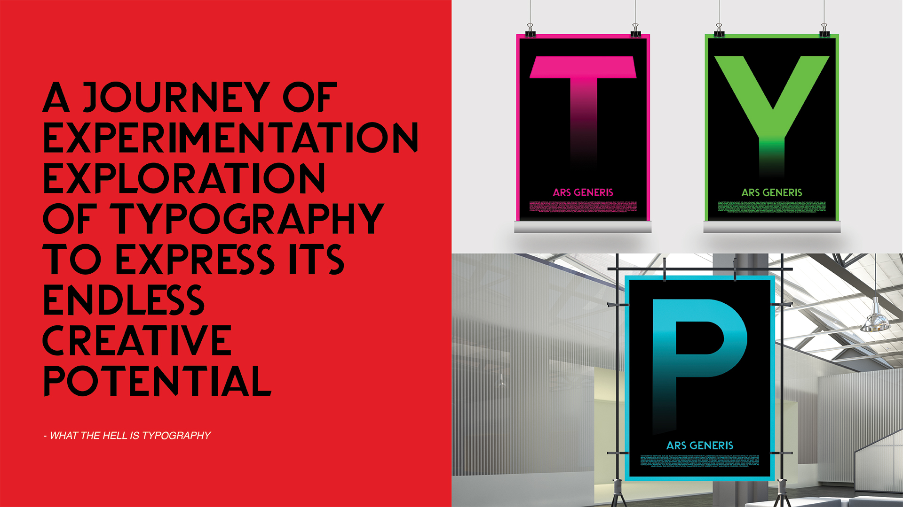

Raja Mahesa Aristo
- Bachelor of Design
- Major in Communication Design
biography
Hi, my name is Raja Mahesa Aristo, and I am a student studying Communication Design within the Bachelor of Design. I am very excited to graduate and have learned a lot throughout my journey in studying graphic design, cherishing and being grateful for every moment during my studies.
I came from a fine arts background during my middle school and high school years when I was still in Jakarta, Indonesia, studying and practicing the field for 3 years. Passionate about surrealism and its history, I did a lot of work inspired by surrealism such as paintings, sculptures, and mix media. However, I wanted to try something new, and progress to a field which allows me to express my creativity (like fine arts), but with more function and objectivity, this is where I fell in love with graphic design. My love of graphic design first happened when I was looking at Sagi Haviv’s renowned logos, as well as the harmonious composition of typography and imagery in old vinyl album covers. I have always been an experimental creative, which is probably why I am in love with surrealism. I often bring similar thought processes of creative expression and experimentation to my design works, at the same time applying the theories and foundation of graphic design that I have learnt throughout my university studies here at Waikato. Graphic design allows me to push my creativity to its maximum potential as there are so many different elements, media, and platforms to work with, each with their own purpose and functionality. Personally, I think of graphic design as “art with a purpose”. Despite graduating very soon, there is always something new to learn, and to improve as a creative, which is why graphic design is a never-ending and beautiful journey.
project description
During the first year of my Communication Design studies, one of the papers that I took introduced me to typography. This paper taught us the anatomy of type, the many ways we can apply them, and showed us that type is more than just written language. With this project, “What the hell is typography?”, I aim to show this point. I would like to share this with people and change the way they perceive typography as it is more than just the conventional understanding of “fonts” and text, personally I think it is a form of art on its own. With this experimental project, through a series of typographic posters, I aim to show the creative potential that we can achieve with typography, displaying and making use of typography into composition of patterns and different forms of shape to name a few.
What The Hell Is Typography

For more information contact us
Email: degreeshow@waikato.ac.nz
Faculty phone: 0800 924 528
Faculty information: cs.waikato.ac.nz